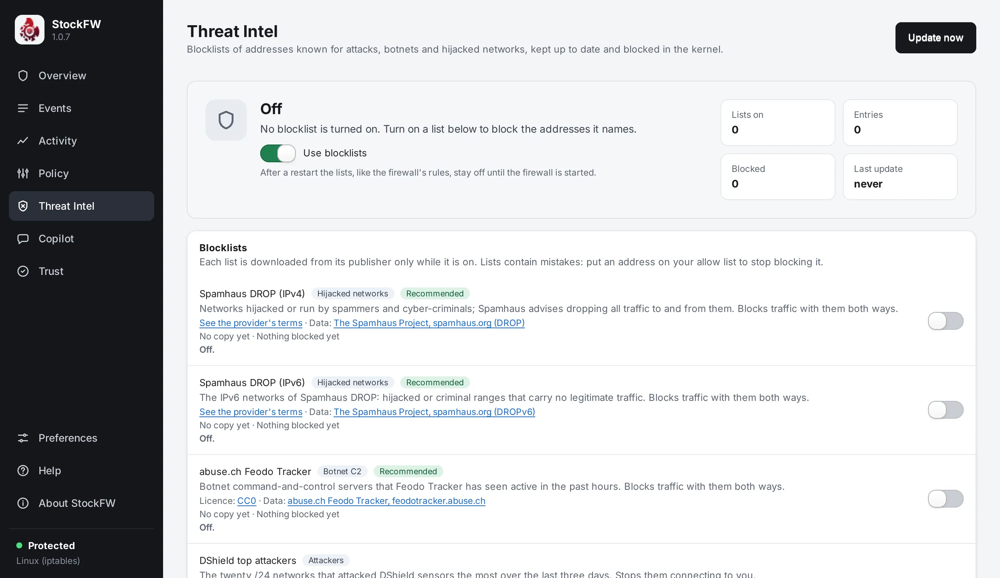

Threat-intel blocklists
A policy says what you allow. A blocklist says what the wider community has seen attacking, hosting botnet controllers or spraying brute-force logins, as address ranges that are refused on sight. StockFW brings well-known feeds in, off until you turn each one on, with the same discipline as the rest of the app: nothing silent, nothing that cannot be undone, and the kernel’s real state shown rather than the configuration.

Linux On Linux the lists are one nftables table of StockFW’s own. Windows On Windows they are Windows Firewall rules in StockFW’s own rule group, StockFW Threat Intel. The engine, the store’s formats, the build of the rule set and every safety subtraction are the same code on both. Blocking by country or network owner is Linux only in this version. The design, with its review findings, is docs/design/1.0.7-threat-intel-design.md in the repository.
The feeds#
Every feed is off until you switch it on and accept its terms. A feed is fetched from its own publisher or not at all: no mirrors, no aggregator of StockFW’s own. Each entry carries the host it contacts, its information and terms pages, the licence where it has been verified (otherwise “See the provider’s terms”), whether it is for non-commercial use only, its format, its default direction and how often it updates.
| Feed | What it lists | Default direction | Updates |
|---|---|---|---|
| Spamhaus DROP, IPv4 and IPv6 | Networks hijacked or leased by professional spam and malware operations. Recommended. | both | 12 h |
| abuse.ch Feodo Tracker | Botnet command-and-control servers. Recommended. | both | 6 h |
| DShield | The top attacking networks seen by the Internet Storm Center. Non-commercial terms. | in | 24 h |
| FireHOL level 1 | An aggregate that already contains the three above and DShield. Turning it on next to them adds a note. | in | 24 h |
| blocklist.de | Addresses reported by fail2ban installations. | in | 24 h |
| Emerging Threats compromised hosts | Hosts known to be compromised. | in | 24 h |
| CINS Army | Poor-reputation addresses from the CINS sensor network. | in | 24 h |
| Tor exit relays | A policy choice, not a threat list; labelled as such. | in | 6 h |
A custom feed is any URL that passes the URL rule, with a name, a format and a direction; typing the URL is your consent for that host. A local list is a CSV or plain file you import yourself, with no network involved.
Direction means what it means for a stateful firewall: in stops them connecting to you, out stops you connecting to them, both does both. Replies to connections you opened are never affected by an in list.
Consent#
The first time you turn a feed on, a dialog says which host will be contacted and how often, what that host learns (your public address and the string StockFW/version), the licence and a link to the terms, and that lists contain mistakes and how to make an exception. Only after Accept does anything download; with nothing turned on StockFW makes no network request at all. Downloads use curl from the system folder, by absolute path, with size caps and timeouts; behind a proxy, set it on the page or with stockfw intel proxy (one with a user name or password is refused, because a command line is readable by every local user). While StockFW runs it checks hourly for feeds that are due; while it is closed nothing updates them except stockfw intel update from cron or a timer. A failed or refused update never removes the previous copy, and a copy that shrank to almost nothing, rolled back to an older date or jumped in coverage is refused until you accept it.
What a feed is checked for#
A downloaded file is text from the internet and is treated as hostile until it has passed every guard: a 64 MB size cap before it is read; strict parsing (addresses, CIDRs and a-b ranges, never names); no single IPv4 interval wider than a /8 and no IPv6 interval wider than a /16; no more than an eighth of the IPv4 space in one list; a list that is empty or mostly unparseable is refused and the set keeps what it had; and a sudden shrink is judged against the previous size. Content dates are read where a format has one, and a list older than seven update intervals is marked stale. Verified test-feed.c
What can never be blocked#
Before anything reaches the kernel, the engine subtracts from every set, and lists in its notes what it subtracted:
- loopback, link-local, multicast, the private ranges, carrier NAT, the reserved and documentation ranges, and the NAT64 prefixes;
- your own exceptions;
- this computer’s own addresses, its connected prefixes and its default gateways;
- the DNS servers in use, on Linux read from
/etc/resolv.confand, when those are loopback stubs, from systemd-resolved’s and NetworkManager’s real lists, on Windows from the adapters; - the peer of your SSH or Remote Desktop session and every established inbound SSH or RDP connection, so a list cannot lock you out of the machine you are configuring it on;
- the feeds’ own hosts, so a list cannot block its own updates.
Then, for sets that block outbound, each IPv4 interval is also added to the IPv6 set inside 64:ff9b::/96, so NAT64 does not bypass the list. Over all sets there are at most 300,000 intervals; above that the build fails and names the largest sets.
How it reaches the engine#
Linux One nftables table, inet stockfw_intel, owned by StockFW and replaced in a single nft -f - transaction, so it applies whole or not at all and a failed apply leaves the previous table in force. The script goes to nft on standard input through GSubprocess; no shell ever sees an address. Three base chains at priority filter - 10 run before the iptables policy, so a listed address is refused even if a policy rule would have allowed it. Inbound drops are silent to the outside; outbound blocks reject with administratively prohibited, so a local program fails at once instead of hanging. Each blocking rule logs with the prefix STOCKFW-TI list, rate-limited, and carries a counter. Verified test-intelset.sh
Windows On Windows the rules are written and read in-process through the firewall’s COM interfaces (no netsh, no PowerShell), all in the group StockFW Threat Intel; the policy’s rules are named StockFW-… outside it, so neither apply nor clear touches the other. Each rule blocks one direction and one address family for at most a thousand ranges, and the whole set is replaced as one unit. Windows Firewall keeps no per-rule count, so the page says it cannot show how many connections each list blocked, and the Security log names no list, so an Events row on Windows shows the block without the list’s name. Known gap The store is %ProgramData%\StockFW\intel, readable by administrators only. There is no stockfw intel on Windows; the page is the whole tool there.
The policy and the lists never touch each other. Applying, reloading or clearing the policy leaves the threat-intel table or rule group alone. The user-facing Stop firewall suspends the lists as well, and Start resumes them, because “stop the firewall” should mean what it says. On Linux the boot service brings the lists back with the policy; see the FAQ.
What the kernel is really doing#
The table, or the rule group, carries a digest of the rule set that produced it. Every surface compares what is live with what StockFW last applied and shows one of these states, never just the configuration:
| State | Meaning |
|---|---|
| off | The master switch is off, or no list is enabled. |
| enforced | The live table is the one StockFW last applied. |
| not loaded | Something should be enforced but the table or rule group is missing: a reboot without the boot service, or someone ran nft flush ruleset. |
| differs | A table or rule group is there, but not the one StockFW applied. |
| suspended | You stopped the firewall, so the lists are off on purpose. |
| unsupported, needs rights, unknown | Cannot enforce here (nft missing), cannot read the engine without root or administrator rights, cannot tell. |
Linux Counters survive updates: before a set is replaced, its live count is added to the list’s carried total, so “blocked 1,204 since 3 November” stays true.
Where it shows up#
- Threat Intel page: the state in words, the master switch, each feed with its licence, direction, entry count, content age, status and blocks; Update now and Apply; your own lists; exceptions; a lookup box that says which lists hold an address and whether it is blocked right now; the Countries and networks card; the notes from the last build. Every job runs off the main thread, so the page never freezes on a download.
- Events: Linux a block by a list shows the list’s name as its rule, and for such an address the right-click Allow becomes Add exception, because an allow rule would not beat the list. Windows The Security log names no list, so the row shows the block only.
- Overview and dashboard: one line with the state and how many lists are enforced; the dashboard’s
/api/intel. - Copilot: a Block list finding when a list blocked a connection (Linux, where the event names the list). It offers neither Ask What-If nor a block, because the address is blocked already.
- What-If does not consult the lists: it answers from the policy and says so under Good to know. The lookup box is the question to ask about a listed address.
- Command line: Linux
stockfw intel status | feeds | terms | enable | disable | on | off | add-feed | proxy | update | apply | clear | import | lists | remove | except | unexcept | exceptions | lookupandstockfw intel geo …, each with--json;stockfw statusgains anintelobject.intel lookupexits 5 when the address is blocked, so a script can branch on it. - Audit log: every apply, update, consent, exception and suspend is a line.
Files#
Linux /var/lib/stockfw/intel/, owned by root, mode 0700. Windows %ProgramData%\StockFW\intel, administrators and SYSTEM only. In both: intel.conf (switches, feeds, custom feeds, local lists, exceptions, the proxy, the country and network rules), one .list and one .state per list, the location database, and applied.state for what the engine was last given. Files are opened without following symlinks, read with a size cap, and written to a fresh name then renamed. A stored list is re-checked against the guards when loaded, so a tampered file is an error, not a block. Verified test-intel.c